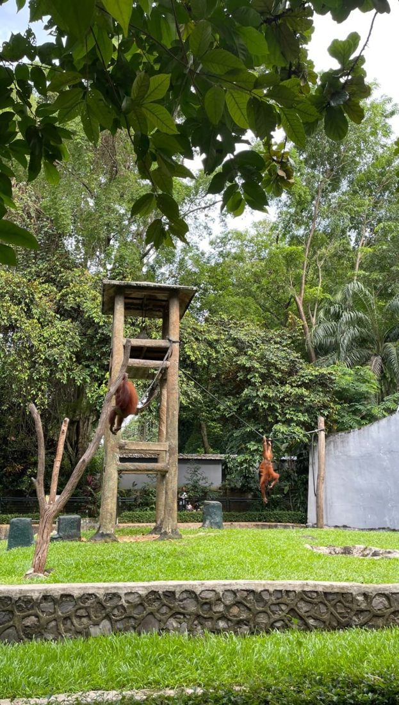

Video wisata Ragunan di YouTube
Tonton suasana Taman Margasatwa Ragunan, dari pintu masuk sampai bertemu satwa, sebelum datang langsung. Video dibuka di YouTube pada tab baru.
Buka di YouTubeTonton video wisata Ragunan di YouTube.

Tonton suasana Taman Margasatwa Ragunan, dari pintu masuk sampai bertemu satwa, sebelum datang langsung. Video dibuka di YouTube pada tab baru.
Buka di YouTube